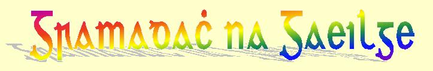

|  | |||
Gramadach na Gaeilge - Irish Grammar |
|||
| Réamhrá | the
Irish language (an Teanga Gaeilge) |
Other
Words (Focail eile) |
Caibidil a Naoi |
| Caibidil a hAon | the
Noun (an tAinmfhocal) |
the
Articles (an tAlt) |
Caibidil a Deich |
| Caibidil a Dó | the
Adjective (an Aidiacht) |
the
Numbers (na hUimhreacha) |
Caibidil a hAon Déag |
| Caibidil a Trí | the
Verb (an Briathar) |
the
Adverbs (na Dobhriathra) |
Caibidil a Dó Dhéag |
| Caibidil a Ceathair | the
Copula (an Chopail) |
Clauses
and Syntax (Abairt agus Comhréir) |
Caibidil a Trí Déag |
| Caibidil a Cúig | the
Prepositions (na Réamhfhocail) |
Initial
Mutations (na hAthruithe Tosaigh) |
Caibidil a Ceathair Déag |
| Caibidil a Sé | the
Conjunctions (na Cónaisc) |
Root
Inflexion (Infhilleadh na fréimhe) |
Caibidil a Cúig Déag |
| Caibidil a Seacht | the
Personal Pronouns (na Forainmneacha Pearsanta) |
the
Phonology (an Fhóneolaíocht) |
Caibidil a Sé Déag |
| Caibidil a hOcht | the
Posessive Pronouns (na hAidiachtaí Sealbhacha) |
the
Orthography (Litriú na Gaeilge) |
Caibidil a Seacht Déag |
Céad míle fáilte romhaibh ! |
|||
This is a short English-Irish grammar guide based on my German original.
Please excuse the probable multitude of errors, for
I am only but a learner, one should in no way take for granted that everything
here is correct.
Corrections are always welcomed!
Translation into English courtesy of Lynn Schneider (all pages except: satz2.htm and satz4.htm, with the kind help of Daniel Nieciecki)
Seo é graiméar achomair na Gaeilge. Gabhaigí mo leithscéal as na meancóga is dócha a rinneas.
Ní foghlaimeoir an-mhaith mé.
Beidh fáilte roimh gach ceartuchán i gcónaí!
| Scríobhaigí chugam,
más mian libh!
Schreibt mir doch, wenn ihr wollt
Send me an eMail, if you want to |
| Sínígí mo leabhar na gcuairteoirí, más é bhur dtoil é |
Verknüpfungen / Links / Naisc
Lehr- und Wörterbücher
/ Teaching books and dictionaries / leabhair agus foclóirí
zu meiner Heimseite / to my homepage
/ chun mo bhunleathanaigh
| © Lars Bräsicke 1999 - 2003 |
letzte Änderung vom 03.09.2003 © Lars Bräsicke
{kind=link}
{kind=link}